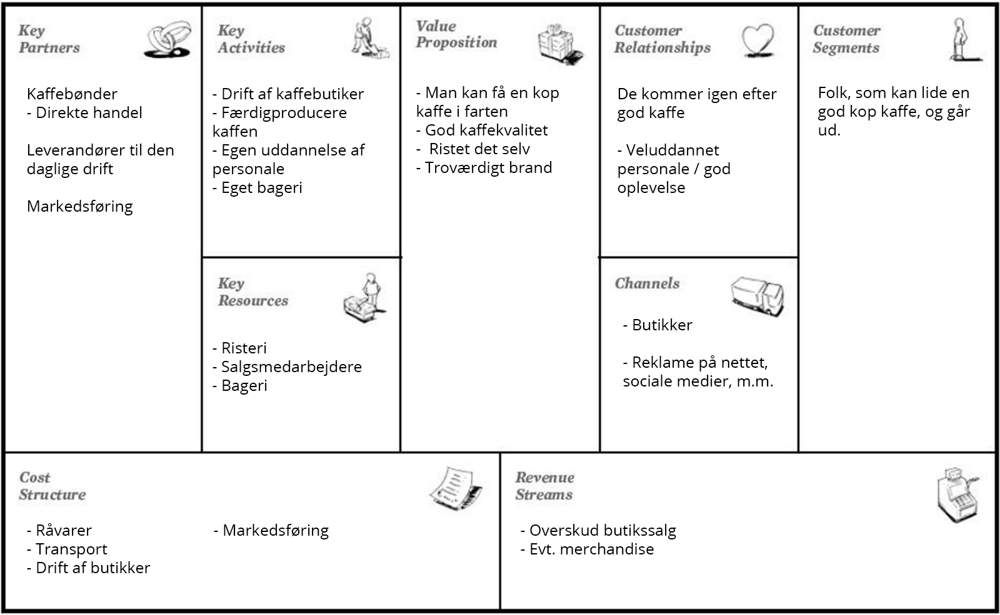

Business Model Canvas
Alle oplysninger er fundet på Espressohouse website: https://dk.espressohouse.com/
Sammenhæng mellem elementer
Key Partners: Direkte handel med kaffebønder giver sikkerhed for kvaliteten, og et omkostningsled mindre.
Key Aktivities / Key Resoureses: De står selv for butiksdrift, risning af kaffe, perosnale, uddannelse af personale, og bageri, som giver til value proposition og økonomi.
Value Proposition: God kaffekvalitet og brand.
Customer Relationship: Godt produkt og oplevelse gør at kunden kommer igen.
Customer Segments: Kaffen og placdering af butikker får kunden ind.
Cost stucture: Der kan spares på egne produktioner/personaleuddannelse.
Revenue Streams: Butikker.